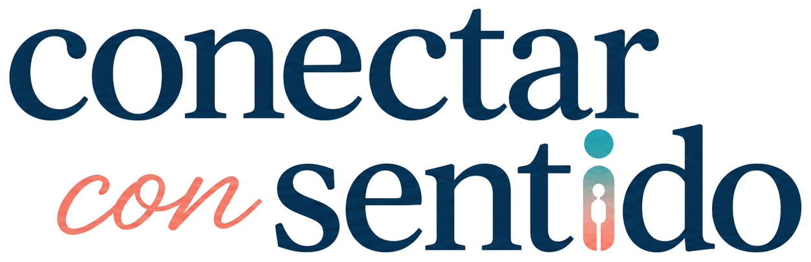
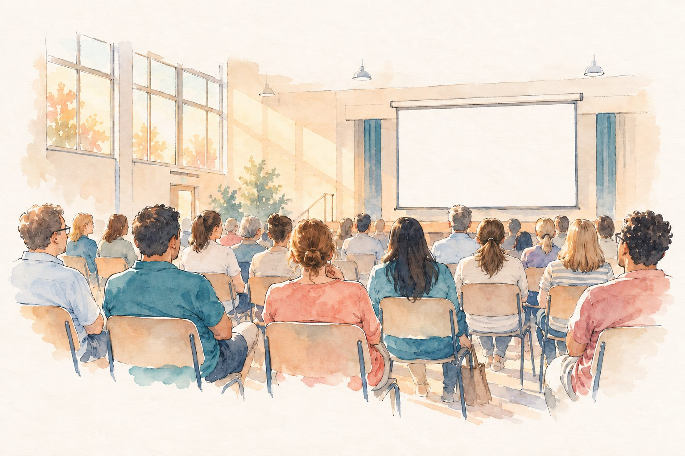

01 Complementa
Agrega información o una mirada más, sin reemplazar el vínculo con otras personas.
→ la conversación con alguien sigue su curso

ConversemosCharla para comunidades escolares
Charla: Adolescentes en la era de la IA
Una charla que abre la conversación, no la cierra.
Pantallas, redes sociales, bullying y salud mental son parte de la misma conversación, y tampoco siempre es fácil abordarlos.
Trabajo con comunidades escolares para convertir estos temas en conversaciones posibles y criterios concretos, desde la psicología, con datos y con lo que todavía no se sabe.
Charla principal
Qué lugar está ocupando la inteligencia artificial en la vida adolescente y cómo pueden familias y colegios acompañar su uso con más criterio.
Consultar por esta charla ↗Una forma de mirarlo
Agrega información o una mirada más, sin reemplazar el vínculo con otras personas.
→ la conversación con alguien sigue su curso
Ayuda a ordenar lo que siente o a encontrar palabras antes de hablar con alguien.
→ llega a alguien, con palabras
El adolescente se siente más capaz de pedir ayuda o de acercarse a una persona.
→ llega a alguien con más fuerza
Conversar con alguien se aplaza una y otra vez.
→ llega tarde, o a medias
La conversación con una persona de confianza finalmente no ocurre.
→ no llega a ocurrir
No se trata de etiquetar el uso como bueno o malo, sino de preguntar qué ocurrió antes, durante y después.
Qué se llevan los asistentes
lo que queda cuando termina la charla
Leer el uso de IA sin reducirlo a «bueno» o «malo».
Abrir la conversación sin convertirla en control, juicio o prohibición.
Reconocer cuándo la IA posterga o desplaza conversaciones importantes.
Formato
más tiempo para preguntas
adaptable a docentes y equipos de convivencia
en la Región Metropolitana y otras regiones
El tono
Con las fuentes a la vista. No vengo a asustar a las familias ni a señalarlas. Tampoco a decir que no pasa nada.
También trabajo

Cuéntame cómo es tu comunidad y vemos juntos el formato que mejor le sirve.
Conversemos sobre tu colegio ↗